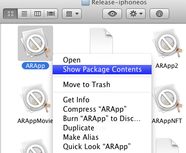

ARToolKit for iOS runs under several modern versions of Apple's iOS operating system, including iPhone, iPad, and iPod Touch devices. This page holds links to resources of special interest for developers working with ARToolKit on the iOS operating system and devices.
This document is meant to be a supplement to the existing configuration documentation, such as calibrating your camera, configuring video capture, as well as training NFT and traditional markers.
There are additional functions available to the iOS camera in ARToolKit, including high-res image capture. Additionally, it is easy to include movies in your AR scene. For more general information, you can read about reducing your iOS app size, or see how ARToolKit can integrate with iOS with the ARApp example.
ARToolKit for iOS offers a wide variety of options for control of the cameras on the device, and the stream coming from them.
You can choose between rear (main) and front cameras, on devices which have more than one camera, and additionally, can request different resolution image data from the cameras. Configuration of these options is performed by use of named parameters to the arVideoOpen() function (in the -start method of the ARViewController class). See how to configure video capture in ARToolKit for more information.
Camera calibration information holds the lens model needed to get ARToolKit tracking working properly. This is pre-supplied for all current supported iOS device models, including specific calibrations for different focus-distances of the iPhone 4 and 4S rear (main) camera, and front cameras on the iPhone 4 and 4S, iPod touch 4G, iPad 2, and iPad 3. Loading of these camera parameters is simplified by adding support to libARvideo for directly requesting the camera parameter structure. See the iOS release 10 notes and look at the -start method of the ARViewController class for example usage. Additionally, the video stream can be flipped vertically or horizontally.
The best guide to camera usage is to examine the example applications carefully, particularly ARViewController, as it is the class which handles most of the interaction with libARvideo. Additional helpful information can be found in the header files <AR/sys/videoiPhone>, <AR/sys/CameraVideo.h> and <AR/sys/MovieVideo.h>.
It is possible to capture a high-resolution image from the camera without closing the live video stream in ARToolKit. The photo that is captured uses the full photo resolution of the camera in use, and the size of this varies from device to device. The photo is always captured in portrait mode (taller than wide). Here are some example sizes:
iPad 3 (rear), iPhone 4 (rear) 1936x2592 pixels iPhone 4s, iPhone 5 (rear) 2448x3264 pixels iPad 2 (rear) 960x720 pixels
The photo capture is initiated by invoking a method on the CameraVideo instance. In ARToolKit for iOS's ARViewController class, the CameraVideo instance is retrieved in the -start method:
<pre> // libARvideo on iPhone uses an underlying class called CameraVideo. Here, we // access the instance of this class to get/set some special types of information. CameraVideo *cameraVideo = ar2VideoGetNativeVideoInstanceiPhone(gVid->device.iPhone); if (!cameraVideo) { NSLog(@"Error: Unable to set up AR camera: missing CameraVideo instance.\n"); [self stop]; return; } // The camera will be started by -startRunLoop. [cameraVideo setTookPictureDelegate:self]; [cameraVideo setTookPictureDelegateUserData:NULL]; </pre>
Before invoking the photo capture method, we must add a delegate method to the same class that receives delegate calls for incoming video frames. The delegate method is an optional member of the \<CameraVideoTookPictureDelegate\> protocol, cameravideoTookPictureHires:userData:jpegData:.
To this delegate method will be vended any user data set with setTookPictureDelegateUserData:, as well as a pointer to an NSData record holding the JPEG file. This file is suitable for writing to disk, or can alternately be saved to the user's photo roll.
<pre> - (void) cameravideoTookPictureHires:(id)sender userData:(void *)data jpegData:(NSData *)jpegData { if (![jpegData writeToFile:jpegPath atomically:NO]) { NSLog(@"Error writing captured photo to '%@'\n", jpegPath); } } </pre> or could be saved to the user's photo library: <pre> import <AssetsLibrary/AssetsLibrary.h> - (void) cameravideoTookPictureHires:(id)sender userData:(void *)data jpegData:(NSData *)jpegData { ALAssetsLibrary library = [[ALAssetsLibrary alloc] init]; [library writeImageDataToSavedPhotosAlbum:jpegData metadata:nil completionBlock:^(NSURL assetURL, NSError *error) { if (error) { NSLog(@"Error writing captured photo to photo album.\n"); } }]; [library release]; } </pre>
Finally, the actual CameraVideo method to invoke the capture operation can be called directly:
<pre> [cameraVideo capturePhoto]; </pre> or can be registered (under an alternative name) as the receiver of an NSNotification, for example an ARViewTouchNotification vended by ARToolKit's default ARView class: <pre> // Setup: [[NSNotificationCenter defaultCenter] addObserver:cameraVideo selector:@selector(capturePhotoNotification:) name:ARViewTouchNotification object:nil]; // Removal of observer is required PRIOR to the CameraVideo instance being dealloc'ed: // Cleanup (done some time later): [[NSNotificationCenter defaultCenter] removeObserver:cameraVideo name:ARViewTouchNotification object:nil]; </pre>
ARToolKit natively supports real-time playback of movie files (including audio) in the augmented environment on iOS. Video can be manipulated in the scene, including being attached to a marker.
A fully functional example named "ARAppMovie" is provided with ARToolKit for iOS.
Movie support is provided via at 3 different levels of abstraction.
include/AR/sys/MovieVideo.h.As MovieVideo is linked to by libARvideo on iOS, all applications must link against AVFoundation.framework and AudioToolbox.framework.
Any video file playable on that iOS device can be handled by the MovieVideo class, provided the movie media is on the local filesystem. I.e. streaming media cannot be handled. If you wish to play media over the network, you will need to use another means to fetch the media completely in advance, cache it on the local filesystem, and then pass the path to the media to ARToolKit.
Media decoding is resource intensive. It is highly recommended that you test the media on your preferred range of target devices. Additionally, performance benefits will be realised if the media fits inside power-of-two sized textures, e.g. width and height of 512 pixels or fewer.
For applications which use the VirtualEnvironment class, objects specified in objects.dat which end in ".mov", ".mp4", or ".m4v" will be loaded by the VEObjectMovie class (provided VEObjectMovie has been compiled into the application binary).
VEObjectMovie loads and draws a movie file from the local file system as a video texture, using the MovieVideo class. It allows playback of MPEG4 video (with or without audio) in the virtual environment. Recommended maximum movie size is 512 pixels or less in both the vertical and horizontal dimensions.
Without any scaling or offset, the movie object is sized so that its largest side is the equivalent of 80 drawing units (usually 80 millimeters). The origin of the object is the lower-left corner of the movie texture. Unrotated, the movie file will be placed in the x-y plane, with its upper surface facing the +z axis. To position the movie differently, apply translation/rotation/scale factors in the VEObject configuration file.
MovieVideo can be used directly when more complicated movie manipulation is required (for example, adjustment of the playback position, or user-interaction).
See the class header for more detail.
Users of the MovieVideo class can listen for the NSNotification MovieVideoPlayBackEndedNotification to be notified of the end of playback of a movie file.
Video input via libARvideo requires frames to be fetched via polling. A new parameter AR_VIDEO_PARAM_IOS_ASYNC can be queried to find out if frames are delivered asynchronously (CameraVideo) or must be fetched by polling (MovieVideo).
It is always desirable to minimize the size of any binary distribution when developing an iOS application, due to App Store cellular download limits. The easiest way to inspect where your footprint is coming from is to inspect the package itself. Locate the built app, right-click on it, and choose "Show package contents".

Look at the file sizes in the resulting directory, and particularly at the size of the compiled executable and your data files (models etc.)
Here is a checklist of things you should check when trying to reduce the size of the executable:
IOS_DEPLOYMENT_TARGET=4.3 in your application settings, and then set ARCHS=armv7. This will eliminate the armv6 architecture from the file, potentially cutting its size roughly in half.ARCHS=armv6 only. All iOS devices support the armv6 instruction set, and the performance loss may be very small.STRIP_INSTALLED_PRODUCT=YES, STRIP_STYLE=all). Also, make sure that any embedded debug symbols are removed from copied binaries (build setting COPY_PHASE_STRIP=YES).DEAD_CODE_STRIPPING=YES.If trying to reduce the size of data files included with your application, pay particular attention to model files and textures.
| Device | First supported (ARToolKit for iOS release) | Last supported (ARToolKit for iOS release) | Notes | | iPad Pro | | | 4.0 GB RAM, Runs iOS v9.1 - | | iPhone 6s Plus | | | 2.0 GB RAM, Runs iOS v9.0 - | | iPhone 6s | | | 2.0 GB RAM, Runs iOS v9.0 - | | iPad Mini 4 | | | 2.0 GB RAM, Runs iOS v9.0 - | | iPad Air 2 | | | 2.0 GB RAM, Runs iOS v8.1 - | | iPhone 6 Plus | | | 1.0 GB RAM, Runs iOS v8.0 - | | iPhone 6 | | | 1.0 GB RAM, Runs iOS v8.0 - | | iPhone 5s | | | 1.0 GB RAM, Runs iOS v7.0 - | | iPhone 5c | | | 1.0 GB RAM, Runs iOS v7.0 - | | iPad (4th Generation) | 15 | | 1.0 GB RAM, Runs iOS v6.0 - | | iPad Mini | 15 | | 512 MB RAM, Runs iOS v6.0 - | | iPhone 5 | 12 | | 1.0 GB RAM, Runs iOS v6.0 - | | iPod touch (5th Generation) | 12 | | 1.0 GB RAM, Runs iOS v6.0 - | | iPad (3rd Generation, March 2012) | 7.0 | | 1.0 GB RAM, Runs iOS v5.1 - | | iPhone 4s | 5.0 | | 512 MB RAM, Runs iOS v5.0 - | | iPad 2 (WiFi + 3G) | 3.0 | | 512 MB RAM, Runs iOS v4.3 - | | iPad 2 | 2.0 | | 512 MB RAM, Runs iOS v4.3 - | | iPod touch (4th Generation) | 1.0 | | 256 MB RAM, Runs iOS v4.1 - 6.1.3 | | iPhone 4 | 1.0 | | 512 MB RAM, Runs iOS v4.0 - 7.1.2 | | iPhone 3GS | beta 1 | | 256 MB RAM, Runs iOS v3.0 - 6.1.3 | | iPhone 3 | beta 1 | 11 | 128 MB RAM, Runs iOS v2.0 - 4.2.1, Supports only one camera resolution (400x304) | | iPhone | beta 1 | beta 2.1 | Runs iOS v1.0 - 3.1.2 |